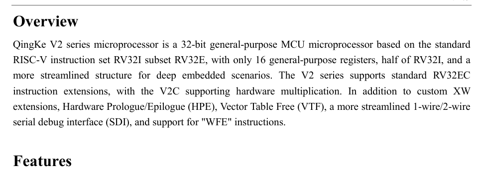
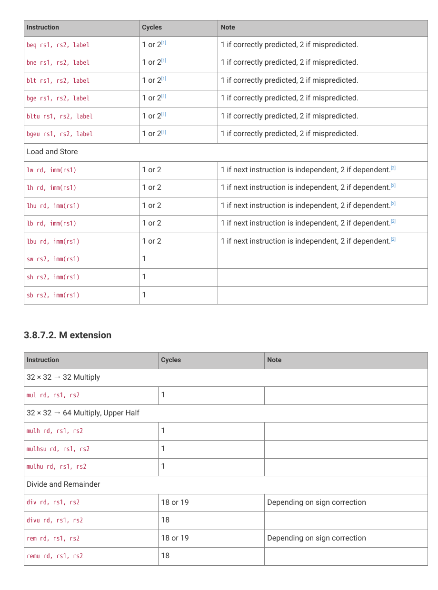

This page records two kinds of measurements: a matched CoreMark run and smaller instruction-path workloads. Both compare the Pico 2’s Hazard3 core with the CH32V003, but they answer different questions.
CoreMark
One workload, two chips
CoreMark is a small benchmark made from integer-heavy tasks. Here it provides a controlled starting point: both chips run the same unmodified CoreMark 1.0 sources, the same 1,200-byte static data setting, and one core. The Pico 2 test uses Hazard3 core 0 only.
Table 1. Matched CoreMark run configuration and raw output
Measure
Pico 2 RISC-V
CH32V003
Core in use
Hazard3 core 0 only
Single QingKe V2A core
Core clock
150 MHz
48 MHz
CoreMark data
1,200 bytes static; reported size 400
1,200 bytes static; reported size 400
Timer
Hardware timer, 1,000,000 ticks/s
SysTick, 6,000,000 ticks/s
Iterations
20,000
1,100
Total ticks
16,128,377
74,193,287
Compiler
GCC 15.2.0
GCC 15.2.0
ISA and ABI
rv32imac_zicsr_zifencei_zba_zbb_zbs_zbkb; ilp32
rv32ec_zicsr; ilp32e
Code and data placement
XIP flash code; static on-chip SRAM data
Flash code; static on-chip SRAM data
Comparison
Raw timer counts tell the clearer story
The benchmark rounds its printed seconds. The values below use each board’s timer count instead. That keeps the comparison tied to the measured interval rather than to a rounded display value.
Table 2. Values calculated from the captured timer output
Measure
Pico 2 RISC-V
CH32V003
Elapsed time
16.12838 s
12.36555 s
Iteration rate
1,240.05038 /s
88.95684 /s
Rate per MHz
8.26700 /MHz
1.85327 /MHz
Relative to CH32V003
13.94× throughput; 4.46× per MHz
Reference
Figure 1. CoreMark iteration rate from raw timer counts
Pico 2 RISC-V
1,240.05 /s
CH32V003
88.96 /s
The Pico 2 completes more benchmark work each second and also more work per MHz in this configuration. That is a useful result for this matched test; it is not a universal ranking of the two chips.
Instruction paths
Small workloads show what a single score hides
These eight tests repeat a small piece of work many times. They are useful for seeing how arithmetic, branches, memory traffic, calls, and software versus hardware math behave in the tested programs. They are not isolated instruction-latency tests, and they are not a MIPS score.
Table 3. Measured time per outer-loop iteration for the supplied instruction-path captures
Workload
What one iteration means
CH32V003 elapsed core periods*
Pico 2 RISC-V measured cycles
ALU updates
Six source-level add, XOR, and rotate-style updates.
22.005
8.001
Branch steps
A xorshift update, a data-dependent choice, and loop control.
24.004
13.761
Read-modify-write
One volatile 32-bit SRAM read and write, plus address and loop work.
18.003
10.007
Register pressure
Twelve accumulator updates; the CH32 build also spills values to its stack.
36.007
14.006
Call and return
One real call, six callee operations, a return, and caller loop work.
26.003
14.004
CRC-like bit work
Four bit-update rounds. Despite an older label, this is not four bytes.
54.003
37.006
32-bit multiply
One source multiplication.
459.990
5.006
Quotient and remainder
One unsigned quotient and one unsigned remainder, not one divide alone.
154.804
48.006
* The CH32V003 did not use a cycle counter. Its value is the captured SysTick count multiplied by eight because SysTick ran at HCLK/8 (6 MHz at a 48 MHz core clock). The Pico 2 value is the captured mcycle count. Each Pico 2 test used 1,000,000 iterations; each CH32V003 test used 10,000.
Same source does not mean the same instructions
On the Pico 2, the compiler used native extensions such as rotate, address-generation, multiply, divide, and remainder instructions. The CH32V003 V2A build is RV32EC: its rotate expressions are synthesized, and multiply and divide use software helpers.
Memory is part of the result
The CH32V003 runs Flash-linked code with one configured Flash wait state and SRAM data. The Pico 2 runs cached XIP-flash code and SRAM data. Its load/store loop also has an immediate load-use dependency that the Hazard3 manual documents as a one-cycle bubble.
What the multiply rows really show
The 459.990-period CH32V003 multiply row is the full shift/add helper path in this binary, not hardware multiply latency. On the Pico 2, the five-instruction loop contains a native mul. The divide row likewise includes both quotient and remainder work.

Figure 2. QingKe V2 manual overview. The tested CH32V003 uses the V2A RV32EC variant; this is why its multiply and divide workloads take software-helper paths.

Figure 3. RP2350 Hazard3 timing-table excerpt. These are perfect-bus reference timings, not a substitute for the measured whole-loop results above.
Manual sources: QingKe V2 Microprocessor Manual, V1.3, p. 1; and RP2350 Datasheet, section 3.8.7, pp. 296-301. The run-specific evidence is retained in this study’s CH32V003 and RP2350 performance-test notes.
How to read this
Keep the measurement boundary in view
For each board, rate = iterations × timer frequency / total ticks. The runs use CoreMark’s performance seeds, which intentionally produce the “Cannot validate operation” message shown in the serial output. A separate profile run checks known CRC values.
These are not official CoreMark scores. The standard CoreMark data block is 2,000 bytes; the shared 1,200-byte setting is necessary for the CH32V003’s 2 KiB SRAM and keeps this particular comparison fair. The smaller workload must not be compared with published 2 KB CoreMark figures.
The instruction-path table has a different boundary on each chip. Pico 2 records mcycle and minstret around the workload; CH32V003 currently uses only its documented SysTick timer, so no retired-instruction count, CPI, or IPC is claimed for it. Neither capture includes cache-hit, bus-contention, trace, or repeated-run data, so those causes are not assigned to individual cycles.
The next useful step is evidence, not a larger score: repeated runs, a safe CH32V003 counter probe, and separate XIP/Flash versus SRAM-code tests. RP2350 also has XIP and bus-fabric counters that can distinguish cache activity from contention in a future, separately labelled run.